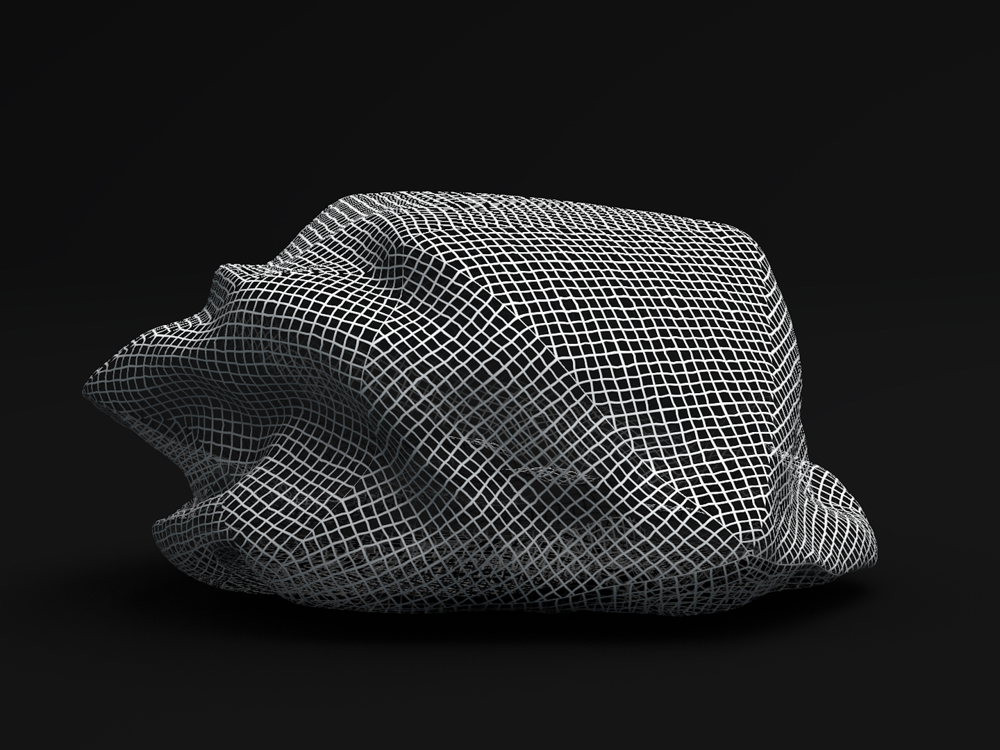
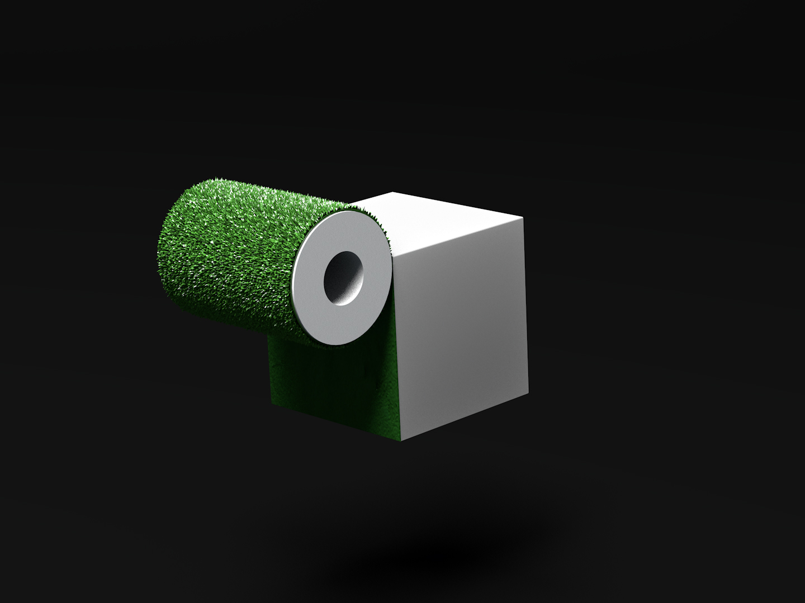
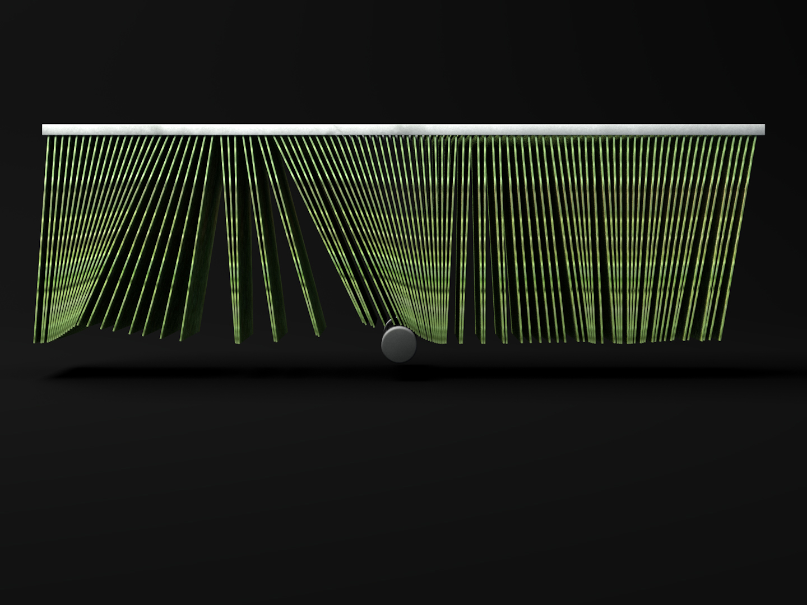
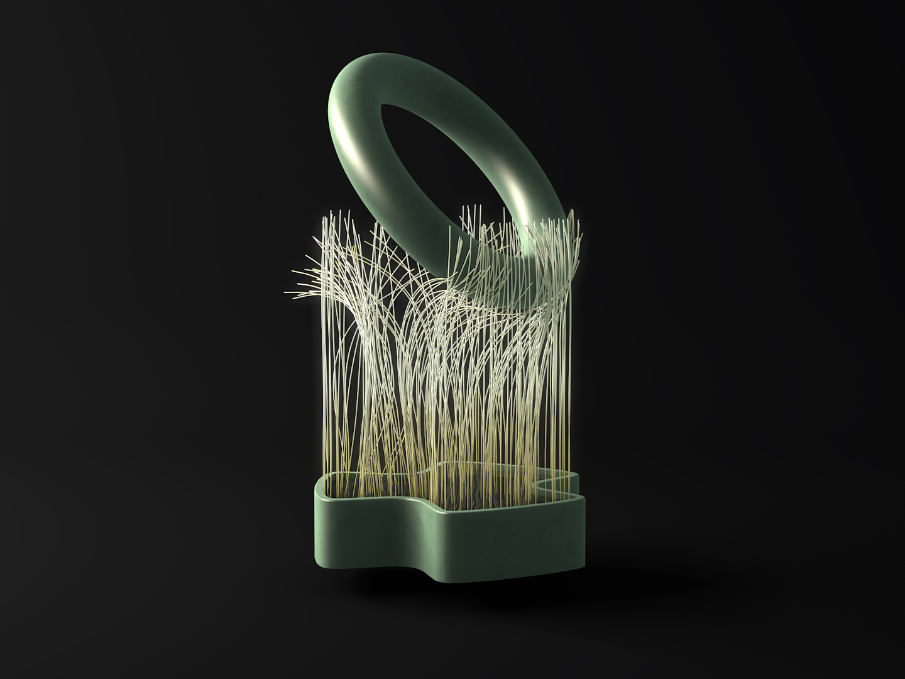
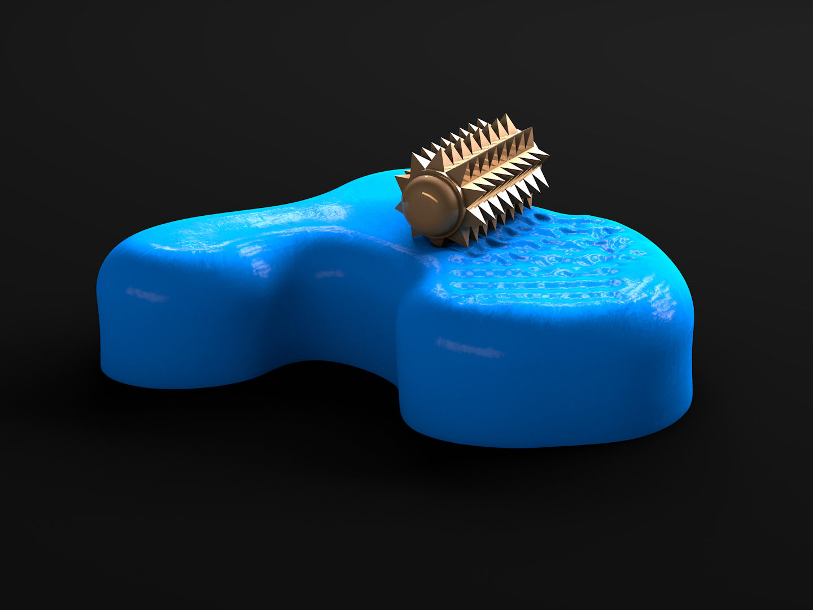

Millions of people all over the world regularly watch videos where someone creates sounds using various objects and whispers into a microphone.
This is part of the hunt for so-called tingles: warm, relaxing “brain massage” which can best be produced by audio and visual stimuli.
The phenomenon has been popularized as Autonomous Sensory Meridian Response (ASMR).
Almost all ASMR videos have a person present to a greater or lesser extent. In some of them the person sits close to the camera and pays intrusive attention to the watcher. In others, the person only shows her hands and remains silent while the sound is created.
This project examines whether a human presence is necessary in order to trigger ASMR or whether the tactile experience can be generated via animated graphic objects.
I have created my own animated ASMR MATERIAL, free from human presence. I have also tested the material quantitatively in a DIGITAL SURVEY and the results are summarized in the video above. The survey opened on April 23rd and closed on May 14th 2018 with 560 finished submissions.
Below are the ten objects of the survey.
Almost all ASMR videos have a person present to a greater or lesser extent. In some of them the person sits close to the camera and pays intrusive attention to the watcher. In others, the person only shows her hands and remains silent while the sound is created.
This project examines whether a human presence is necessary in order to trigger ASMR or whether the tactile experience can be generated via animated graphic objects.
I have created my own animated ASMR MATERIAL, free from human presence. I have also tested the material quantitatively in a DIGITAL SURVEY and the results are summarized in the video above. The survey opened on April 23rd and closed on May 14th 2018 with 560 finished submissions.
Below are the ten objects of the survey.




